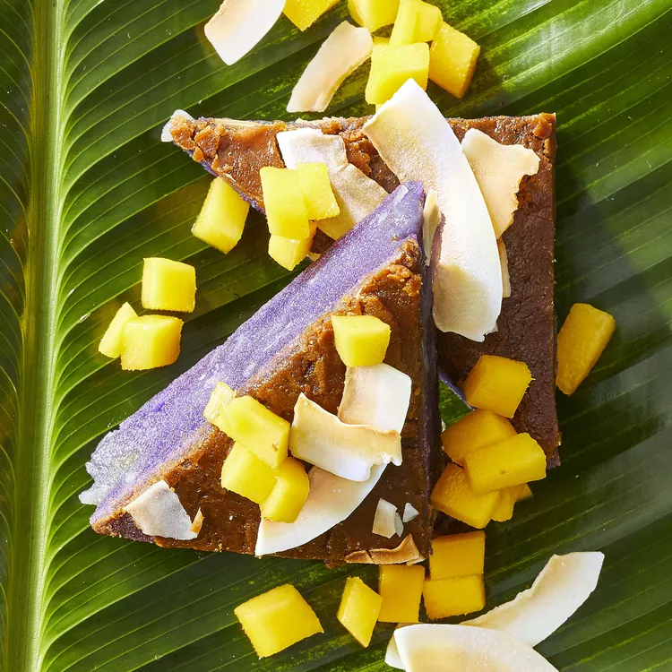

Purple Yam and Coconut Mochi (Ube Bibingka)

Description
Purple yams bring brilliant color to these sweet and chewy coconut mochi cakes.
For an extra flourish, you can top them with diced fresh mango.
Candied pineapple or dried papaya are also good toppers.
Ingredients
- 2 banana leaves
- cooking spray
- 12/3cups sweet rice flour(mochiko)
- 11/4cups rice flour
- 1/2 teaspoon baking powder
- 1/4 teaspoon salt
- 1 cup water
- 3/4 cup unsweetened coconut milk
- 1/2 (12 ounce) jar ube yam spread
- 2 teaspoons ube extract (such as McCormick®) (Optional)
- 2/3cup macapuno (preserved young coconut strings)
- 1 tablespoon muscovado sugar
- 3 tablespoons butter, divided
- 1/4 cup muscovado sugar
- 2 tablespoons toasted flaked coconut (Optional)
Steps
- Preheat the oven to 375 degrees F (190 degrees C). Line a 9x9-inch baking pan with banana leaves or parchment paper and coat with cooking spray.
- Whisk rice flours, baking powder, and salt together in a large bowl, then stir in the water and coconut milk. Add ube spread and ube extract. Fold in macapuno and 1 tablespoon muscovado. Pour into the prepared pan.
- Bake in the preheated oven until top starts to crack and leaves turn brown, about 35 minutes. Brush top with 1 tablespoon butter, then bake until a toothpick inserted in center comes out clean, about 20 minutes more.
- Melt remaining 2 tablespoons butter in a small saucepan over medium heat. Stir in 1/4 cup muscovado sugar; cook, stirring, until it starts to boil. Remove from heat and pour over warm mochi, covering evenly. Sprinkle with toasted coconut. Let cool, at least 30 minutes.
- Use banana leaves to lift mochi out of the pan. Cut into 25 small squares; cut squares diagonally into triangles.